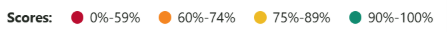

Supply Plan
Scorecard
The Supply Plan Scorecard generates an overall score
for each program's supply plan based on Quality (including data
completeness and procurement scheduling) and Stock Status (against
minimum and maximum levels). The score uses the same criteria as the QAT
Problem List, a validation screen available to program users and admins to
improve their supply plans. The scorecard highlights areas needing
improvement and allows global users to compare performance across programs.
Users can view results at three levels:
- Individual program
- Aggregated programs by country
- Aggregated technical areas by country
Higher scores indicate stronger supply plan
performance. Scores are color‑ranked, with a target score of
90%.

Note: Because the scores are derived from the data in the QAT Problem
List, they are not tied to a specific reporting period. Instead, downloaded
program versions recalculate the QAT Problem List using the current date,
while server‑based program versions calculate it based on the upload
date.
Overall Supply Plan Score
The Overall Supply Plan Score is an average of the
Quality Score and the Stock Status Score.
Example:
| Category |
Score |
| Data Quality Score |
65% |
| Stock Status Score |
57% |
| Overall Supply Plan Score |
61% = (65%+57%)/2 |
Quality Score
The Quality Score draws on four key data areas
defined in the QAT Problem List. For each criterion, QAT calculates the
proportion of compliant planning units relative to the number of active
planning units. These compliance percentages are then averaged to produce
the Quality Score.
- Forecasted Consumption: Missing forecast consumption data in the
next 18 months results in the planning unit being marked
non‑compliant.
- Actual Consumption: Missing recent actual consumption data in the
last 3 months or gaps within the last 6 months results in the planning
unit being marked non‑compliant.
- Actual Inventory: Missing actual inventory data in the last 3
months results in the planning unit being marked non‑compliant.
- Shipments: QAT identifies planning units with procurement
scheduling issues, including:
- shipments with past receive dates but not marked "received," or
- shipments that should have been submitted (based on lead time)
but are still not marked "submitted."
Any procurement scheduling issue results in the planning unit being
marked non‑compliant.
Example:
Supply plan has 12 active planning units
| Criteria |
Planning Units in compliance |
Percentage In-compliance |
| Forecasted Consumption |
9 |
9/12 = 75% |
| Actual Consumption |
7 |
7/12 = 58% |
| Inventory |
5 |
5/12 = 42% |
| Shipments |
10 |
10/12 = 83% |
| Quality Score |
|
65% = (75%+58%+42%+83%)/4 criteria |
Stock Status Score
The Stock Status Score is calculated based on the
number of months (18 months in future) each planning unit is
stocked‑to‑plan. QAT calculates the proportion of compliant
planning unit months (i.e. stocked‑to‑plan) relative to the
number of possible months.
Example:
Supply plan has 12 active planning units
| Status |
Months in compliance |
Percentage In-compliance |
| Stocked-to-Plan |
120 |
100% |
| Above Max |
31 |
0% |
| Below Min |
53 |
0% |
| Stocked Out |
7 |
0% |
| N/A |
5 |
- |
| Stock Status Score |
|
57% = 120/211 |
-
Numerator = Planning
unit‑months in
compliance (Stocked‑to‑plan) = 120 months
-
Denominator = Maximum planning
unit‑months in compliance
= (18 months of data) × (# active planning units) −
months with
stock status as N/A
= (18 months of data × 12 active planning units) − 5
months as
N/A
= 211 months
|